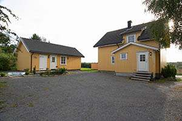

Velkommen til Soltoppen Barnehage
Soltoppen Barnehage har en solrik og flott beliggenhet på landet. Soltoppen ligger på Lystad i Sandefjord, med fem mål tomt grenser vi til landbruk og friluftsområder. Flere hundre sauer ønsker barn velkomne som nærmeste nabo.
Den store naturtomten byr på fysiske utfordringer, spennende opplevelser og mange fine gjemmesteder.
Her er det trær å klatre i, bakker å ake i, og sammen skal vi lage en liten kjøkkenhage. Her kan vi dyrke urter og grønnsaker.
- Her blir det gøy på landet!
